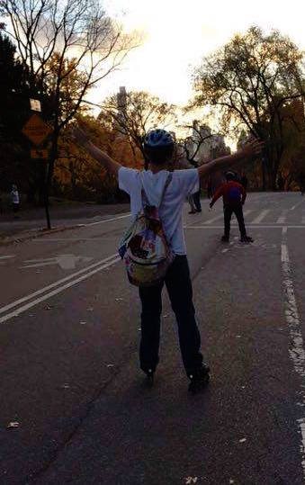
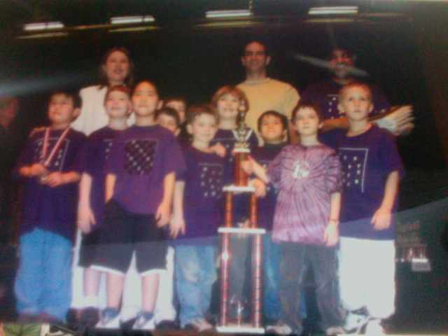

Interests

Exercise
I've been playing sports, ever since I was little. I've played on leagues for 6 different sports. As a result, I've always really enjoyed being active!
Currently the way I stay in shape is through running, yoga, rollerblading going to the gym, and I've recently went to my first spin class!

Chess
I started playing chess competitively when I was 4 years old. In 1st grade, I placed 6th in the nation for my age group. It was such a large part of my
elementary school life, that even to this day, family friends still ask me how chess is going, even though I quit playing 8 years ago. However, I still love
to play, and have even worked as a chess tutor twice.

Skincare
I've recently started to get into skincare a lot. I've started doing research into different types of products such as cleansers
and serums. I really enjoy talking to the people I've met who share this interest in me as we swap tips on products that we use.

Concerts
I love going to live music events, in particular concerts. I have a lot of very fond memories from attending concerts, and music festivals. Some of my favorite concerts have been:
Sylvan Esso, Run the Jewels, Chet Faker, Chance the Rapper, Noname, Glass Animals, Solange, Mura Masa, Alt-J.